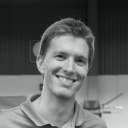
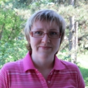

Naše vize
Jak přemýšlíme o budoucnosti jazykového vzdělávání? Digitálně sebejistý lektor a učitel věří, že moderní technologie mohou vhodně doplnit a zefektivnit výuku i učení cizím jazykům a že mají v jazykovém vzdělávání svůj smysl.
Lektor a učitel jsou a budou ve výuce nezastupitelní, změněný způsob zacházení s informacemi však vyžaduje změnu jejich role v poradce a motivátory.
Lektor a učitel jsou a budou ve výuce nezastupitelní, změněný způsob zacházení s informacemi však vyžaduje změnu jejich role v poradce a motivátory.
Náš tým

Jitka Kunčarová
jednatelka společnosti
Kreativní manažerka se zkušenostmi z veřejného i soukromého školství, působila na střední i vysoké škole, řídila jazykovou agenturu a divizi celoživotního vzdělávání na VŠP a.s. v Ostravě. Chce dělat jen to, co má smysl a vede k cíli. Ráda pracuje s motivovanými lidmi, kterým nevadí, že vidí dopředu. Dává řád a smysl vytvářeným souborům výukových materiálů k modulům odborné angličtiny, připravuje a řídí projekty ESF. Byla zapojena do řady mezinárodních projektů, absolvovala zahraniční stáže a studijní pobyty k různým oblastem vzdělávání. Publikuje v oblasti kvality vzdělávání.
jednatelka společnosti
Kreativní manažerka se zkušenostmi z veřejného i soukromého školství, působila na střední i vysoké škole, řídila jazykovou agenturu a divizi celoživotního vzdělávání na VŠP a.s. v Ostravě. Chce dělat jen to, co má smysl a vede k cíli. Ráda pracuje s motivovanými lidmi, kterým nevadí, že vidí dopředu. Dává řád a smysl vytvářeným souborům výukových materiálů k modulům odborné angličtiny, připravuje a řídí projekty ESF. Byla zapojena do řady mezinárodních projektů, absolvovala zahraniční stáže a studijní pobyty k různým oblastem vzdělávání. Publikuje v oblasti kvality vzdělávání.

Jiří Kunčar
jednatel společnosti, programátor
Motivovaný programátor, který stojí za vznikem aplikace OPEN LEARNING pro online podporu vzdělávání. V současné době působí v CERNu ve Švýcarsku. Vystudoval Univerzitu Karlovu a softwarové inženýrství na Mälardalens högskola ve Švédsku. Spolupracoval jako programátor se společnostmi Anvio.cz, TDO s.r.o., Red Hat.
jednatel společnosti, programátor
Motivovaný programátor, který stojí za vznikem aplikace OPEN LEARNING pro online podporu vzdělávání. V současné době působí v CERNu ve Švýcarsku. Vystudoval Univerzitu Karlovu a softwarové inženýrství na Mälardalens högskola ve Švédsku. Spolupracoval jako programátor se společnostmi Anvio.cz, TDO s.r.o., Red Hat.

Kateřina Oleksíková
metodička výuky cizích jazyků
Aktivní překladatelka a tlumočnice využívá své dlouholeté zkušenosti s německým jazykem ve vzdělávání dospělých. Při výuce jazyka se řídí heslem: Mozek je sval jako každý jiný, je třeba ho trénovat - pak se výsledky dostaví. Díky svému systematickému a pozitivnímu přístupu a schopnosti domluvit se (nejen v cizím jazyce) nemá problém spolupracovat v týmu různorodých lidí. Ráda pracuje na projektech, které mají smysl. Má na starosti metodiku výukových modulů a metodické vedení lektorů. Vystudovala germanistiku a historii na Filozofické fakultě v Olomouci.
metodička výuky cizích jazyků
Aktivní překladatelka a tlumočnice využívá své dlouholeté zkušenosti s německým jazykem ve vzdělávání dospělých. Při výuce jazyka se řídí heslem: Mozek je sval jako každý jiný, je třeba ho trénovat - pak se výsledky dostaví. Díky svému systematickému a pozitivnímu přístupu a schopnosti domluvit se (nejen v cizím jazyce) nemá problém spolupracovat v týmu různorodých lidí. Ráda pracuje na projektech, které mají smysl. Má na starosti metodiku výukových modulů a metodické vedení lektorů. Vystudovala germanistiku a historii na Filozofické fakultě v Olomouci.

Simona Martínková
lektorka
Má bohaté zkušenosti s uplatňováním moderních vyučovacích metod v oblasti výuky cizích jazyků ve školách i vzdělávání dospělých. Je pozitivní, umí zaujmout a přesvědčit, má vynikající komunikační dovednosti v českém, anglickém a francouzském jazyce. Je autorkou prvních výukových materiálů k modulu Základní chemická terminologie. Vystudovala Pedagogickou fakultu v Olomouci a Filozoficko-přírodovědeckou fakultu v Opavě. Učila na vysoké i na základní škole.
lektorka
Má bohaté zkušenosti s uplatňováním moderních vyučovacích metod v oblasti výuky cizích jazyků ve školách i vzdělávání dospělých. Je pozitivní, umí zaujmout a přesvědčit, má vynikající komunikační dovednosti v českém, anglickém a francouzském jazyce. Je autorkou prvních výukových materiálů k modulu Základní chemická terminologie. Vystudovala Pedagogickou fakultu v Olomouci a Filozoficko-přírodovědeckou fakultu v Opavě. Učila na vysoké i na základní škole.

Josef Žabenský
redaktor
Úspěšný student doktorského programu Matematická analýza na MFF UK. Rád pracuje pod tlakem a úkolů se zhošťuje s kreativitou a odhodláním. Racionalita a systematičnost vycházející z matematického vzdělání ve spojení s širokými znalostmi anglického jazyka z něj učinily osvědčeného redaktora majícího za sebou práci na obou dosavadních projektech, a to Angličtina pro chemiky a Angličtina pro strojaře.
redaktor
Úspěšný student doktorského programu Matematická analýza na MFF UK. Rád pracuje pod tlakem a úkolů se zhošťuje s kreativitou a odhodláním. Racionalita a systematičnost vycházející z matematického vzdělání ve spojení s širokými znalostmi anglického jazyka z něj učinily osvědčeného redaktora majícího za sebou práci na obou dosavadních projektech, a to Angličtina pro chemiky a Angličtina pro strojaře.
Peter Kóša
programátor, pracovní síla z východu
Student posledního ročníku MFF UK v Praze. Programuje v kdejakém jazyce, který mu zadají, aktuálně například v PHP. Až bude velký, rád by se odstěhoval do Švýcarska nebo Itálie, protože v Praze je mu zima.
programátor, pracovní síla z východu
Student posledního ročníku MFF UK v Praze. Programuje v kdejakém jazyce, který mu zadají, aktuálně například v PHP. Až bude velký, rád by se odstěhoval do Švýcarska nebo Itálie, protože v Praze je mu zima.

Kateřina Slaninová
autorka vzdělávacích materiálů, lektorka, školitelka
Jako autorka výukových materiálů v angličtině a němčině pro obory chemie, strojírenská technologie a cestovní ruch se podílí na práci OPEN AGENCY již několik let. Aktivní lektorka a školitelka učitelů a lektorů je přesvědčena o smyslu použití metody OPEN LEARNING. Učí celou škálu studentů od střední školy, vysoké školy, firem a z řad učitelů. Studovala na Slezské univerzitě v Opavě, na Technische Universität v Drážďanech a na Philipps-Universität v Marburgu, kde se věnovala angličtině i němčině. Absolovala několik dalších metodických pobytů v zahraničí, hlavně v Anglii a v Německu. Je přesvědčena o tom, že každý učitel jazyků se musí dál vzdělávat a zdokonalovat v jazycích.
autorka vzdělávacích materiálů, lektorka, školitelka
Jako autorka výukových materiálů v angličtině a němčině pro obory chemie, strojírenská technologie a cestovní ruch se podílí na práci OPEN AGENCY již několik let. Aktivní lektorka a školitelka učitelů a lektorů je přesvědčena o smyslu použití metody OPEN LEARNING. Učí celou škálu studentů od střední školy, vysoké školy, firem a z řad učitelů. Studovala na Slezské univerzitě v Opavě, na Technische Universität v Drážďanech a na Philipps-Universität v Marburgu, kde se věnovala angličtině i němčině. Absolovala několik dalších metodických pobytů v zahraničí, hlavně v Anglii a v Německu. Je přesvědčena o tom, že každý učitel jazyků se musí dál vzdělávat a zdokonalovat v jazycích.

Zdeněk Kunčar
online podpora
Student Vysokého učení technického v Brně. Podílí se na vytváření audiovizuálních materiálů pro studenty odborné angličtiny. Své technické znalosti uplatňuje při poskytování online podpory uživatelům OPEN LEARNING.
online podpora
Student Vysokého učení technického v Brně. Podílí se na vytváření audiovizuálních materiálů pro studenty odborné angličtiny. Své technické znalosti uplatňuje při poskytování online podpory uživatelům OPEN LEARNING.
Adam Dehner
office manager
Houževnatý, soutěživý a vytrvalý manažer kanceláře OPEN AGENCY. Když něco dělá, tak to chce dělat pořádně. Vystudoval Vysokou školu báňskou - Technickou univerzitu Ostrava, obor Marketing a obchod. Své technické znalosti uplatňuje při poskytování online podpory uživatelům OPEN LEARNING a při realizaci marketingových kampaní.
office manager
Houževnatý, soutěživý a vytrvalý manažer kanceláře OPEN AGENCY. Když něco dělá, tak to chce dělat pořádně. Vystudoval Vysokou školu báňskou - Technickou univerzitu Ostrava, obor Marketing a obchod. Své technické znalosti uplatňuje při poskytování online podpory uživatelům OPEN LEARNING a při realizaci marketingových kampaní.
Publikační činnost
- KUNČAROVÁ, J.: Paradoxy v jazykovém vzdělávání. Speciál pro střední školy č. 2/2014, vychází jako pravidelná příloha časopisu Řízení školy.
- KUNČAROVÁ, J.: Příprava učitelů cizích jazyků ve středních odborných školách. Speciál pro střední školy č. 4/2013, vychází jako pravidelná příloha časopisu Řízení školy.
- KUNČAROVÁ, J.: Jak změnit obsah a metody výuky odborné angličtiny ve středních odborných školách. Speciál pro střední školy č. 11/2012, vychází jako pravidelná příloha časopisu Řízení školy.
- NEZVALOVÁ, D., KUNČAROVÁ, J.: Ověřování kvality školy. Ostrava: Ostravská univerzita, 2006. ISBN 80-7368-198-6
- NEZVALOVÁ, D., KUNČAROVÁ, J.: Vlastní hodnocení školy, hlavní oblasti – soubor ukazatelů. Ostrava: Ostravská univerzita, 2006. ISBN 80-7368-197-8.
- NEZVALOVÁ, D., KUNČAROVÁ, J.: Vlastní hodnocení školy, klíč k vyhodnocení ukazatelů. Ostrava: Ostravská univerzita, 2006. ISBN 80-7368-245-1
- KUNČAROVÁ, J. Further education and new requirements of the changing world. Learning region – Proceedings of the Final konference of the EPANIL project, Ostrava, VŠP, a.s. ISBN 80-86764-49-4.
- KUNČAROVÁ, J.: Metodika tvorby programu celoživotního vzdělávání. Ostrava: Vysoká škola podnikání, 2007. ISBN 978-80-86764-77-1.
- KUNČAROVÁ, J.: Učením k prosperitě, Bruntál 2008, MORAVSKÁ EXPEDICER, ISBN 80-86511-28-6
- JÜNGER, J., KUNČAROVÁ, J., MRÁKOTOVÁ, R.: Podnikavost, podnikání a cestovní ruch, Ostrava, 2008. ISBN: 80-86764-48-6
Zahraniční zkušenosti
- Modulární organizace vzdělávacích programů (stáž na HHS Maastricht, program EU Leonardo CZ/97/1/3/Ex/I.1.2.c.), 1997
- Společný vzdělávací projekt (přípravná návštěva, program EU Socrates LE-PV-7/98/I, koordinátorka mezinárodního projektu LIN-E-99-11), 1999
- Kvalita ve vzdělávání (studijní pobyt A-01-062, program EU Sokrates – Arion, SEELB Belfast), 2002
- Efektivní sebeevaluace škol (zastoupení České školní inspekce v tříletém projektu EU, 2002 - 2003)
- Rozvoj podnikavosti mládeže (mezinárodní výměnný pobyt, Finsko, program EU Leonardo CZ/05/A/EX/134146), 2005
- Projekt EPANIL - Společné evropské principy pro identifikaci, hodnocení a uznávání výsledků neformálního vzdělávání a informálního učení v rámci celoživotního učení, (člen řešitelského týmu, studijní cesta Velká Británie, Univerzita Norwich, pilotní projekt programu EU Leonardo CZ/04/B/F/PP-168010), 2006 0440
- Podnikání v sociální ekonomice, CIP Equal – člen řešitelského týmu Centrum podpory sociálního podnikání, grantová smlouva č. 304/2006, Finanční mechanismy EHP/ Norska, 2006
- Evaluace a zajišťování kvality ve vzdělávání dospělých, Atény, studijní pobyt, NAEP/Grundtvig/Mobility osob, reg. č. M1-2007-71, GR-2007-044-002, 2007
- Projekt Improving Quality of Science Teacher Training in European Cooperation (IQST), externí evaluátor projektu programu EU Socrates – Comenius 2.1, No. 128747-CP-1-2006-1-CZ-Comenius-C21, 2009
Open Agency